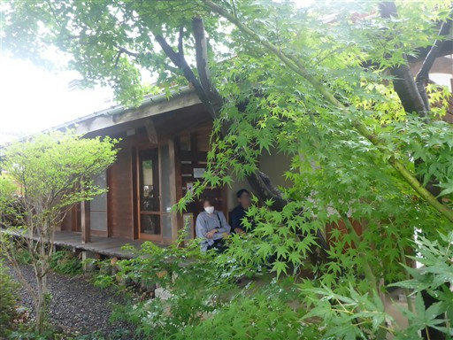
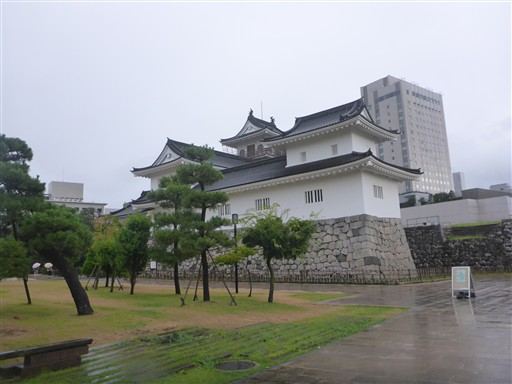
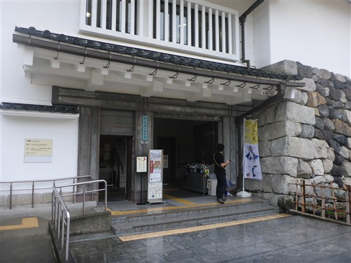
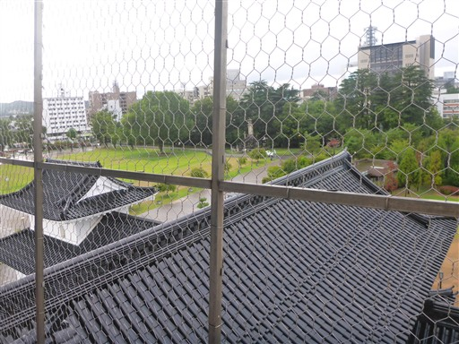
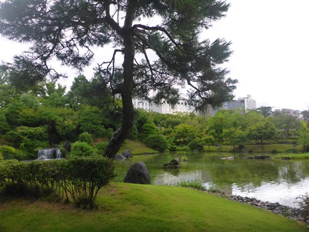
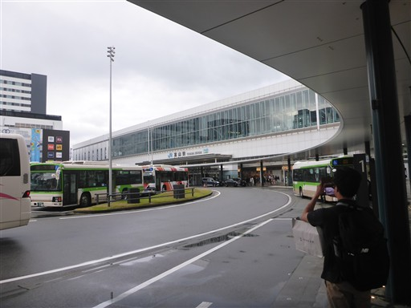
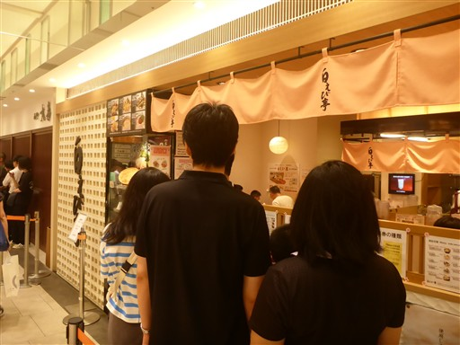
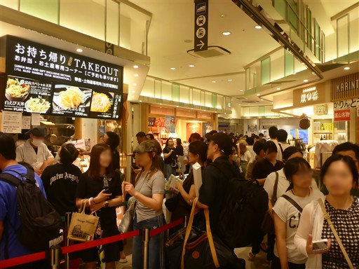
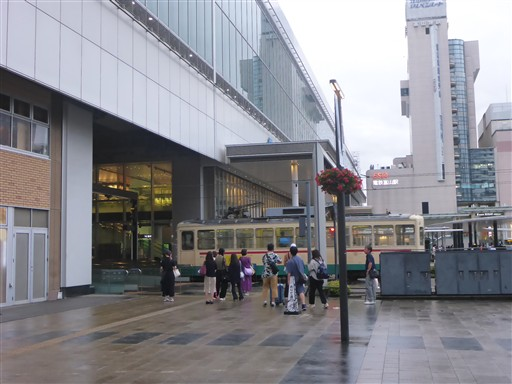

薬師岳～立山～剱岳～奥大日岳
| 日付 |
2025年8月12日（火） - 2025年8月17日（日） |
| 山域 |
北アルプス |
| メンバー |
単独 |
| 山行形態 |
5泊6日テント、車中泊 |
| アクセス |
車、バス、電車 |
| ルート (Map) |
| 2日目： | 折立 (10:59) - (12:13) 青淵三角点 (12:41) - (13:42) 五光岩ベンチ - (14:25) 太郎平小屋 - (14:50) 薬師峠キャンプ場 |
|---|
| 3日目： | 薬師峠キャンプ場 (4:03) - (5:22) 薬師岳山荘 - (6:15) 薬師岳 (6:45) - (7:25) 北薬師岳 - (8:22) 間山 - (9:05) スゴ乗越小屋 (9:24) - (9:56) スゴ乗越 - (11:19) 休憩 (11:55) - (12:43) 越中沢岳 (13:00) - (14:36) 鳶山 - (15:11) 五色ヶ原山荘 - (15:26) 五色ヶ原キャンプ場 |
|---|
| 4日目： | 五色ヶ原キャンプ場 (5:11) - (5:25) 五色ヶ原山荘 - (5:56) ザラ峠 - (6:56) 獅子岳 (7:09) - (8:32) 龍王岳 - (9:03) 一ノ越 - (9:50) 雄山 (10:42) - (12:39) 別山北峰 - (13:23) 剱沢キャンプ場 |
|---|
| 5日目： | 剱沢キャンプ場 (5:00) - (5:24) 剣山荘 - (5:46) 一服剱 - (6:27) 前剱 - (7:51) 剱岳 (8:08) - (9:50) 一服剱 (10:16) - (10:58) 剱沢キャンプ場 (11:51) - (12:37) 剣御前小屋 - (13:32) 雷鳥沢キャンプ場 |
|---|
| 6日目： | 雷鳥沢キャンプ場 (4:59) - (5:34) 新室堂乗越 - (7:01) 奥大日岳 - (8:12) 七福園 - (8:19) 中大日岳 - (8:28) 大日小屋 - (8:43) 大日岳 - (8:56) 大日小屋 - (10:22) 大日平山荘 - (11:46) 大日岳登山口 - (11:55) 称名滝 - (12:12) 称名平駐車場 |
|---|
|
今年の夏季休暇は一人でテント泊山行に行けることになった。
テント泊山行は2010年の南アルプス以来、実に15年振り。
15年振りにダンボールからザックを取り出し、ザックが無事かどうかのチェックから始める。
行先は中央アルプスの将棊頭山～摺古木山にしようと考えていたのだが、
8月に入ってからずっと天候不順が続く。
夏季休暇の取得時期をずらしたが、それでもダメで、
比較的、天気がマシそうな富山県に目的地を変更することにする。
折立から入山し、剱岳まで縦走する予定だ。
立山には行ったことがあるが、それも18年振りの訪問となる。
1日目
本日は移動日なので朝はゆっくり。
朝食後に出発し、昼食に小布施の「そば処 せきざわ」でそばを食べる。

豪雨の北陸自動車道を抜けて富山に到着。
1つぐらい観光したいと思い、富山城に立ち寄る。

模擬天守は富山市郷土博物館になっている。入場料は210円。

上部は展望台になっていて、城址公園と富山市街を見渡せる。

周辺を散策。きれいに整備されている。

散策後は富山駅に移動。立山に来た時以来の訪問だ。

夕食は「白えび亭」で。富山は白えびが有名だ。

17時半になると、もう辺りはごった返している。ものすごい活気だ。

富山市内を走る路面電車。
周辺で明日の朝食、昼食にパンとおにぎりを買ったら称名平に向かう。
